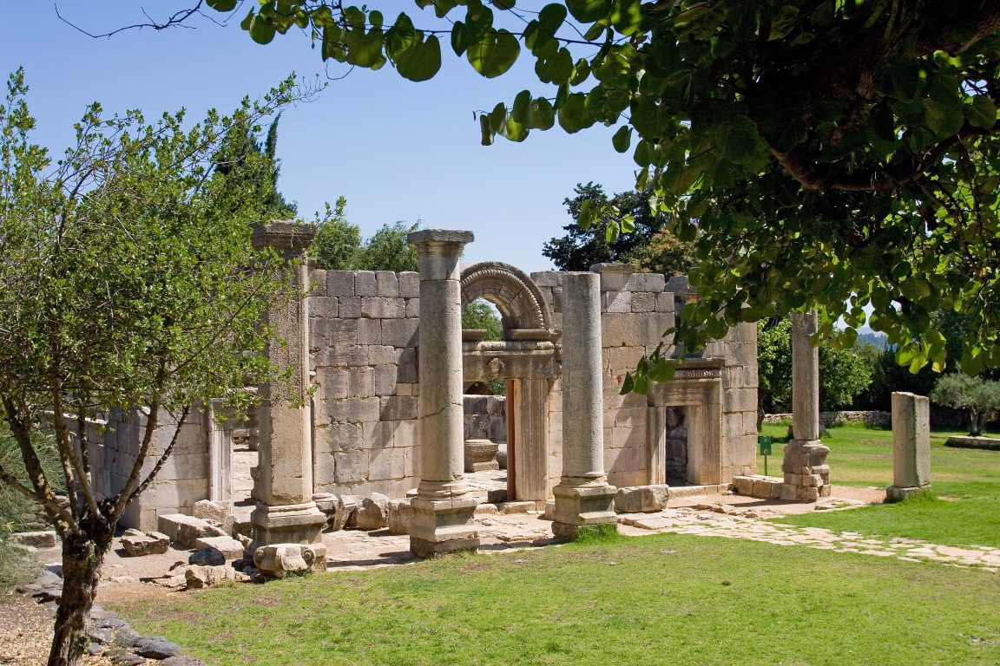
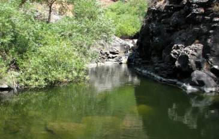
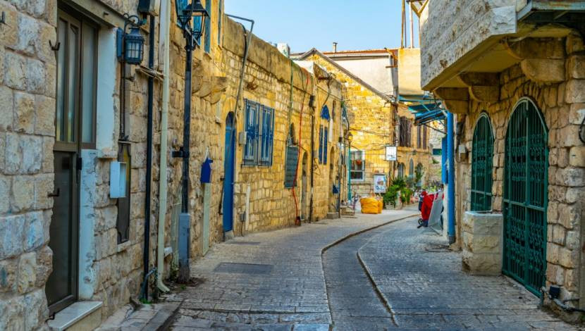

המומלצים שלנו

התמונה מתוך אתר ויקיפדיה
שמורת נחל הבניאס

התמונה מתוך אתר ויקיפדיה
קבר רבי מאיר בעל הנס

צילום: דורון ניסים
גן לאומי ברעם

צילום: יוחאי כורם
זוויתן תחתון ובריכת המשושים

צילום: Depositphotos/Dudlajov
העיר העתיקה של צפת

צילום: יוחאי כורם
מערת קשת

צילום: גליה גל-אלברט ואריה אלברט
רמת הנדיב

צילום: יוחאי כורם
נחל ראש פינה